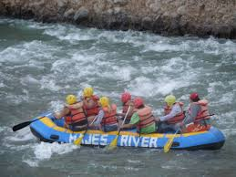
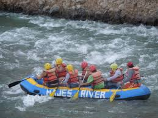

RUTA TURÍSTICA 1
TOUR DE ARQUEOLOGÍA A TORO MUERTO HUELLAS DE DINOSAURIO DE QUERULLPA Y BALNEARIOS DE CHANCHARAY
CASTILLA BAJA - AREQUIPA
PRECIO
S/. 350.00
Precio por persona en base a 02 personas como mínimo
Este tour dura 1 día
RESUMEN
- Hora de salida: 05:00am
- Duración: 14 horas aproximadamente
- Hora de retorno: 05:00pm
- Lugar de finalización: Calle Santa Catalina
ESTE TOUR INCLUYE:
- Recojo desde su Hotel en el centro de Arequipa
- Paradas turísticas durante todo el recorrido
- Transporte Turístico para todo el recorrido
- Guiado profesional durante todo el recorrido
ESTE TOUR NO INCLUYE:
- Desayuno
- Almuerzo
- Entrada a Toro Muerto: S/. 5.00
- Entrada a Querullpa: Monto voluntario
¿QUE LUGARES CONOCEREMOS EN EL TOUR A PETROGLIFOS DE TORO MUERTO, QUERULLPA Y BALNEARIOS DE CHANCHARAY?
- Valle de Majes
- Petroglifos de Toro Muerto
- Parque Jurásico de Querullpa
- Dinosaurios de Querullpa
- Huellas de dinosaurio de Querullpa
- Rio Majes
- Mirador del Valle de Majes desde Querullpa
- Balneario de Chancharay
ITINERARIO DETALLADO
05:00am – Partida de la ciudad de Arequipa hacia el Valle de Majes.
08:00 am Desayuno
09:00 Nuestra primera visita y punto principal de nuestro recorrido serán los Petroglifos de Toro Muerto donde encontraremos un fabuloso conjunto de petrograbados, bloques de roca volcánica esparcidos en un numero alrededor de 500 piezas. Pueden apreciarse figuras zoomorfas tales como aves, mamíferos, reptiles, etc. hechas durante la época de la Cultura Wari. Toro Muerto está reconocida mundialmente como uno de los repositorios de Petroglifos más ricos del mundo.

11:00am – Visitaremos las Huellas de Dinosaurios de Querulpa, subiremos una caminata de 20 minutos aproximadamente, en el camino podremos apreciar unas réplicas de dinosaurios extintos hechas de fibra en las que nos tomaremos fotografías. También podremos apreciar un pequeño museo con huesos de dinosaurio fosilizados y en la cima observaremos unas huellas de dinosaurios que habitaron esta zona hace millones de años.


01:00pm – Visitaremos los balnearios de Chancharay y degustaremos platos a base de camarón y ceviche.


03:00pm – Retornaremos a la ciudad de Arequipa después de disfrutar de un día lleno de historia y llenos de la energía que nos brindan los petroglifos de Toro Muerto.
07:30pm – Llegaremos a la ciudad de Arequipa.
IMPLEMENTOS A LLEVAR
- Zapatillas
- Sombrero
- Lentes de sol
- Bloqueador solar
- Repelente para mosquitos
RUTA TURÍSTICA 2
TOUR DE AVENTURA TORO MUERTO HUELLAS DE DINOSAURIO DE QUERULLPA Y BALNEARIOS DE CHANCHARAY, MAJES RIVER, PISADA DE DINOSAURIO DE CAPIZA, VIRACO, COMPLEJO ARQUEOLOGICO DE MAUCALLACTA Y HACIENDA SANTA MARIA
PAMPACOLCA CASTILLA BAJA Y MEDIA - AREQUIPA
PRECIO
S/. 600.00
Precio por persona en base a 02 personas como mínimo
Este tour dura 2 días
RESUMEN
- Hora de salida: 11:00 pm
- Duración: 2 días
- Hora de retorno: 05:00pm
- Lugar de finalización: Calle Santa Catalina
ESTE TOUR INCLUYE:
- Recojo desde su Hotel en el centro de Arequipa
- Paradas turísticas durante todo el recorrido
- Transporte Turístico para todo el recorrido
- Guiado profesional durante todo el recorrido
ESTE TOUR NO INCLUYE:
- Desayuno
- Almuerzo
- Cena
- Hotel
- Entrada a Toro Muerto: S/. 5.00
- Entrada a Querullpa: Monto voluntario
¿QUE LUGARES CONOCEREMOS EN EL TOUR?
- Petroglifos de Toro Muerto
- Parque Jurásico de Querullpa
- Balneario de Chancharay
- Majes River
- Pisada de dinosaurio Capiza
- Pueblo de Viraco
- Complejo arqueológico de Maucallacta - Pampacolca
- Hacienda Santa María – Pampacolca
ITINERARIO DETALLADO
Primer día
05:00am – Partida de la ciudad de Arequipa hacia el Valle de Majes.
08:00 am Desayuno
09:00 Nuestra primera visita y punto principal de nuestro recorrido serán los Petroglifos de Toro Muerto donde encontraremos un fabuloso conjunto de petrograbados, bloques de roca volcánica esparcidos en un numero alrededor de 500 piezas.
11:00am – Visitaremos las Huellas de Dinosaurios de Querulpa, subiremos una caminata de 20 minutos aproximadamente.
13:00 – Visitaremos los balnearios de Chancharay y degustaremos platos a base de camarón y ceviche.
16:00 - 19:00 pm – Canotaje en Majes River
 

19:30 pm – cena y descanso
Segundo día
06:00 Desayuno
07:00 Pisada de dinosaurio Capiza

07:30 Viaje a Viraco, visita de pueblo tradicional

11:00 Visitaremos Complejo arqueológico de Maucallacta - Pampacolca.

12:00 Visitaremos Hacienda Santa María – Pampacolca

13:00 Almuerzo
15:00 Retorno directo a la ciudad de Arequipa
IMPLEMENTOS A LLEVAR
- Zapatillas
- Sombrero
- Lentes de sol
- Bloqueador solar
- Repelente para mosquitos
- Ropa abrigadora
- Pastillas para mareo
RUTA TURÍSTICA 3
TOUR DE AVENTURA AGUAS TERMALES DE HUANCARAMA, VALLE DE LOS VOLCANES, MAMACOCHA, VIRACO, PISADA DE DINOSAURIO CAPIZA, ROSTRO DE CRISTO, PETROGLIFO DE COSOS, BALNEARIO DE CHANCHARAY, HUELLAS DE DINOSAURIO DE QUERULLPA Y TORO MUERTO
CASTILLA ALTA, MEDIA Y BAJA - AREQUIPA
PRECIO
S/. 800.00
Precio por persona en base a 02 personas como mínimo
Este tour dura 3 días
RESUMEN
- Hora de salida: 17:00
- Duración: 3 días
- Hora de retorno: 17:00
- Lugar de finalización: Calle Santa Catalina
ESTE TOUR INCLUYE:
- Recojo desde su Hotel en el centro de Arequipa
- Paradas turísticas durante todo el recorrido
- Transporte Turístico para todo el recorrido
- Guiado profesional durante todo el recorrido
ESTE TOUR NO INCLUYE:
- Desayuno
- Almuerzo
- Cena
- Hotel
- Entrada a Toro Muerto: S/. 5.00
- Entrada a Querullpa: Monto voluntario
- Entrada a baños termales de Huancarama
¿QUE LUGARES CONOCEREMOS EN EL TOUR?
- Baños termales de Huancarama
- Cataratas congeladas de Panahua
- Valle de los volcanes
- Laguna de Mamacocha
- Nevado Coropuna
- Pueblo de Viraco
- Pisada de dinosaurio Capiza
- Parque Jurásico de Querullpa
- Balneario de Chancharay
- Petroglifos de Toro Muerto
ITINERARIO DETALLADO
Primer día
19:00 Partida de la ciudad de Arequipa – Caylloma – Orcopampa
07:00 Desayuno Orcopampa
08:00 Nuestra primera visita y punto principal de nuestro recorrido será los baños termales de Huancarama

10:00 Visita Panahua o Misahuanca

11:00 Valle de los Volcanes Andagua


13:00 Almuerzo Andagua
15:00 Laguna de Chachas o la laguna de Mamacocha


17:00 Retorno a distrito de Andagua
19:00 Cena y descanso en el distrito de Andagua
Segundo día
06:00 Desayuno
07:00 Visita nevado Coropuna y avistamiento de camélidos sudamericanos (vicuña, alpaca, llama y guanaco)


10:00 Viaje a Viraco, visita de pueblo tradicional
13:00 Pisada de dinosaurio de Capiza
15:00 Majes River
18:00 Cena
Tercer día
06:00 Desayuno
07:00 Visitaremos los Petroglifos de Cosos
08:00 Visitaremos las Huellas de Dinosaurios de Querulpa, subiremos una caminata de 20 minutos aproximadamente, en el camino podremos apreciar unas réplicas de dinosaurios extintos hechas de fibra en las que nos tomaremos fotografías.
10:00 – Visitaremos los Petroglifos de Toro Muerto donde encontraremos un fabuloso conjunto de petrograbados, bloques de roca volcánica esparcidos en un numero alrededor de 500 piezas.
12:00 Visitaremos los balnearios de Chancharay y degustaremos platos a base de camarón y ceviche.
14:00 Retorno directo a la ciudad de Arequipa
IMPLEMENTOS A LLEVAR
- Zapatillas
- Sombrero
- Lentes de sol
- Bloqueador solar
- Repelente para mosquitos
- Ropa abrigadora
- Pastillas para mareo